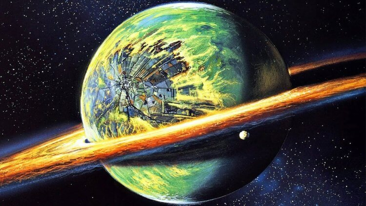

галактикой, по факту в нем может находиться до 100 миллиардов планет! Надо ли говорить, что

большинство из них до сих пор не изучены, и, как мне кажется, чтобы изучить нашу галактику так,
как, например, комнату в квартире, потребуются еще сотни или тысячи лет. Из тех планет, существование
которых подтверждено учеными, каждая обладает своими уникальными особенностями и характеристиками, иногда
кардинальным образом отличаясь от тех, что мы с вами привыкли видеть на Земле. Какие же планеты можно назвать самыми интересными?
как, например, комнату в квартире, потребуются еще сотни или тысячи лет. Из тех планет, существование
которых подтверждено учеными, каждая обладает своими уникальными особенностями и характеристиками, иногда
кардинальным образом отличаясь от тех, что мы с вами привыкли видеть на Земле. Какие же планеты можно назвать самыми интересными?